Vzdušnice (dříve vzduchovna) je nejdůležitější součást vzduchové soustavy varhan, často bývá nazývána „srdcem nástroje“. Vzdušnice má zvnějšku podobu ploché skříně, na které shora stojí všechny (nebo většina) píšťaly nástroje. Ty jsou napájeny vzduchem pomocí složitých mechanismů, skrytých uvnitř vzdušnice v závislosti na povelech od hracího stolu. Vzdušnice tedy přiděluje vzduch jednotlivým píšťalám podle vůle varhaníka. Jeji funkci ve varhanách charakterizuje následující schématický náčrtek: 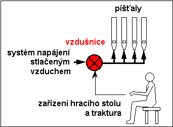 Z pohledu funkce je vzdušnice maticí, složenou s pneumatických (nebo mechanicko-pneumatických či elektropneumatických) obvodů logických součinů (AND), které můžeme slovně popsat touto podmínkou: Píšťala zazní, je-li součástí zapnutého
rejstříku a zároveň patří-li hranému tónu: Rejstříky – řady píšťal stejného charakteru zvuku tvoří řádky této matice (podélný směr ve vzdušnici), tóny pak sloupce (příčný směr na vzdušnici). V průběhu staletého vývoje varhan se objevila celá řada principů a konkrétních konstrukčních řešení vzdušnic, z pohledu vnitřního uspořádání je však vždy můžeme rozdělit do dvou velkých skupin – vzdušnice s podélným uspořádáním (s rejstříkovými kancelami) a vzdušnice s příčným uspořádáním (tónovými kancelami). Třetí možnost představuje skříňová vzdušnice (Unit), která má společný vzduchojem pro celou vzdušnici, není tedy dále rozdělena ani v příčném, ani v podélném směru. Základní směry na vzdušnici jsou vyznačeny na následujícím obrázku: |
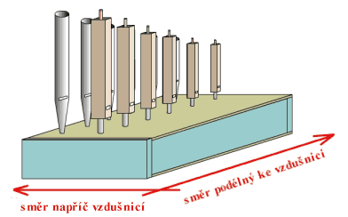
Rejstříkové a tónové uspořádání je nejčastější a
setkáme se s ním prakticky u všech nástrojů. Na následujícím obrázku je
znázorněn hlavní konstrukční rozdíl mezi těmito vzdušnicemi. Vzdušnice
s tónovými kancelami je uvnitř rozdělena v příčném směru
pomocí přihrádek (tyto přihrádky tvoří jakousi mříž, dříve se proto tato
část vzdušnice označovala jako „mřížina“) na kanálky (kancely), které
patří jednomu tónu. Naopak vzdušnice s rejstříkovými kancelami
má tyto kanálky v podélném směru a patří jednomu rejstříku: |
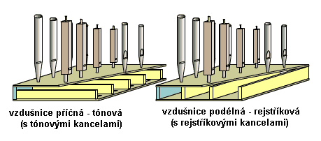
Podrobný technický popis konstrukce jednotlivých
typů vzdušnic včetně vysvětlení jejich funkce najdete na navazujících
stránkách. |
Konstrukce nevelkých nástrojů je založená na jedné či dvou vzdušnicích (manuálové a pedálové), velké nástroje (s více manuály a pedálem) jich mohou mít i více (i několik desítek u největších nástrojů – píšťaly jednoho manuálu či pedálu mohou stát i na několika samostatných vzdušnicích). Varhanářství používá několika způsobů rozmístění (pořadí) píšťal na vzdušnici. Nejjednodušší se jeví rozmístění v pořadí tónů tak, jak jdou za sebou na klaviatuře (chromaticky): |
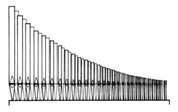 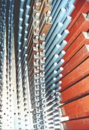 |
Píšťaly jsou tedy rozmístěny v řadě od největší po nejmenší, sousední píšťaly se od sebe liší o půl tónu. I když se tento způsob rozmístění jeví jako nejjednodušší, má i své nevýhody – velké píšťaly jsou na jedné straně (nevýhodně zabírají více prostoru, jejich hmotnost je soustředěna do jednoho místa, zásobování vzduchem je nerovnoměrné...), zvuk při hře vychází jen z omezené šířky této řady (není rovnoměrněji rozložen a pohybuje se podle výšky aktuálně hraného tónu), problémy jsou i po stránce estetické. Toto uspořádání se proto používá spíše u malých nástrojů (portativů a pozitivů). Častěji se ve varhanách setkáme spíše s následujícím uspořádáním píšťal: |
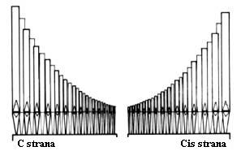 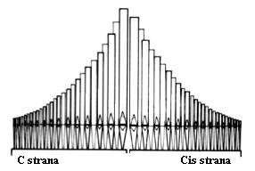 |
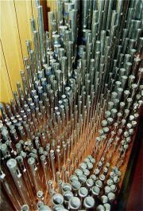Je pro něj charakteristické rozdělení píšťal do dvou skupin, sousední píšťaly se v nich liší o celý tón. Na jedné straně tak jsou píšťaly tónů c, d, e, fis, gis, ais, na druhé pak zbývající cis, dis, f, g, a. Tyto skupiny se označují podle prvního tónu jako C a Cis strana. 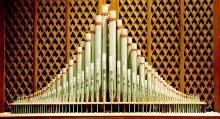Toto dělení má oproti chromatickému uspořádání mnoho konstrukčních výhod (rovnoměrnější rozdělení hmotnosti i rozměrů píšťal podél vzdušnice, lepší zvukové vlastnosti – roztažení zvuku do celé šířky prospektu). Pořadí tónů se liší podle konstrukce konkrétního nástroje (od krajů ke středu, od středu ke krajům nebo střídavě), snahou je nejen co nejlepší využití prostoru v nástroji a estetický vzhled viditelných řad píšťal, ale také co nejlepší přívod vzduchu k píšťalám bez ohledu na jejich vzdálenost od místa "napájení" vzdušnice (u vzdušnic s rejstříkovou kancelou). U tohoto uspořádání je časté úplné oddělení C a Cis strany ve dvou vzdušnicích, které se někdy budují do dvou samostatných skříní. |
Píšťaly, stojící na vzdušnici, jsou s ní spojeny
a k ní připevněny několika způsoby (v závislosti na konstrukci, velikosti
a hmotnosti). Nejjednodušší je pouhé zasunutí do píšťalnice
(svrchní desky vzdušnice s otvory pro píšťaly) bez jakékoliv další opory: |
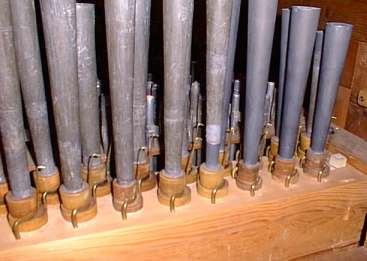
Hlavní část píšťal v nástroji však je kromě zasazení
do otvoru ještě podepřena v píšťalových lavičkách (stojanech s otvory,
kterými prochází noha píšťaly). Největší (nejdelší) píšťaly jsou navíc
zavěšeny na háčcích v držácích píšťal. Konstrukce a použití píšťalových
stojanů (laviček) a závěsů je patrná z následujících obrázků: |
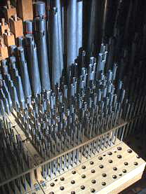 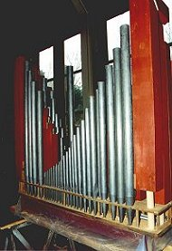 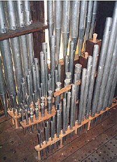 |
V některých případech píšťaly nestojí přímo na vzdušnici
(píšťaly některých speciálních hlasů, např. Kornetu jsou ze zvukových
důvodů na vyvýšených píšťalnicích, velké a prospektové píšťaly by se zase
přímo na vzdušnici nevešly). Pak je k nim vzduch ze vzdušnice přiveden
pomocí konduktů – pevných či ohebných trubek nebo hadic z kovu (olova)
či plastů: |
I když se píšťaly takového hlasu mohou nacházet i
poměrně daleko od příslušné vzdušnice, příslušný rejstřík (a tím i všechny
další komponenty, především ventily, zásuvky apod.) patří k této vzdušnici
(stroji) a jsou z ní „napájeny“. |
Vzdušnice patří k nejsložitějším součástem varhan
(co do množství součástek a funkčních uzlů ji dnes předčí jen komplikované
moderní hrací stoly s mnoha zabudovanými pomocnými zařízeními, např. programovatelnými
kombinacemi a spojkami). Na kvalitě jejího zpracování závisí kvalita a
především spolehlivost celého nástroje. Každý ze dvou (tří) základních
typů vzdušnice se používá v několika konstrukčních modifikacích, lišících
se především konstrukcí použitých ventilů a dalších součástí pro rozvod
vzduchu. Na dalších stránkách tak najdete spíše schématický (principiální)
popis nejrozšířenějších variant vzdušnic, z důvodu přehlednosti a názornosti
je většina obrázků zjednodušena a omezena na zobrazení charakteristických
prvků vzdušnice pro několik málo píšťal či rejstříků. Ve skutečné vzdušnici
se zobrazené uzly budou mnohokrát (až několik set krát) opakovat. |
Na navazujících stránkách je popis principu funkce a několika konstrukčních variant vzdušnic s rejstříkovými kancelami, tónovými kancelami a skříňové vzdušnice. |
Poznámka: Tato stránka je součástí Anatomie varhan ®, © Ing. Petr Bernat. Všechny animace © Konrad Zacharski